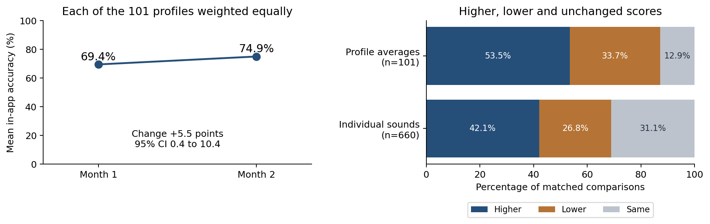

An invitation to research partnership from SpeechLP
November 2026
SpeechLP records every scored articulation practice attempt children make at home, with timestamps, target sounds, and practice frequency. In a first look at 101 children who practiced the same sounds over two consecutive months, average app-scored accuracy rose from 69.4% to 74.9%. We are looking for university researchers to help answer what this data can and can’t show, starting with two small, focused studies.
Home practice is a standard part of treatment for speech sound disorders, yet the field knows little about how much children actually practice or how practice relates to progress.
SpeechLP’s records speak directly to the first two gaps, and a partnership could address the other three.
Every scored practice item is logged with the word attempted, sounds recognized, whether it was accepted, a timestamp, and session, across all 24 English consonants. The dataset is still growing.
Among 101 children practicing the same sounds in two consecutive 30-day periods, app-scored accuracy rose from 69.4% to 74.9%, while average practice fell from 6.7 to 3.4 sessions and from 4.7 to 2.7 practice days per child.

Figure. Mean in-app accuracy across the 101 profiles (left) and the share of profiles and individual sounds with higher, lower, or unchanged scores (right). From the full report (Silver et al., 2026).
What the data can’t show yet. These are observational results with no comparison group. Children who kept practicing for two months may differ from those who stopped, and some change may reflect regression toward the mean. Accuracy is the app’s own scoring, not yet checked against SLP judgment. Most children were aged 2–5, when many sounds are still emerging; most English consonants are acquired by age 5;0, with /ɹ/, /θ/, /ð/, and /ʒ/ last (Crowe & McLeod, 2020), so some gains may reflect normal development. Diagnosis and severity aren’t recorded, though families connected to an SLP could supply them with consent, and in-app accuracy doesn’t show carryover to untrained words or conversation. The studies below are designed to answer these questions.
We suggest two starting studies; a partner could take on one or shape their own. In each, SpeechLP provides practice data, the app platform, engineering support, and recruitment through connected SLPs. The partner leads study design, ethics approval, and analysis. Together they follow two steps: first, validate the app’s correct/incorrect scoring against SLPs, which few home-practice tools have done in English; then use the same platform to study the gradual, multidimensional signs of progress that correct/incorrect scoring misses. Validation results will also guide our ongoing fine-tuning of SpeechLP’s speech recognition model. A planned upgrade aims to recognize all 24 consonants (the current model hears /ʒ/ as /tʃ/), reduce reliance on Apple’s speech recognition as a backup checker, and detect phonological processes.
Starter pilot (could support a co-authored ASHA Convention submission)
Starter study using existing data
Longer-term directions. Once scoring is validated, the same platform could support larger studies designed together: randomized comparisons of feedback type and frequency within the app, and prospective outcome studies with independent and functional measures such as percentage of consonants correct (Shriberg et al., 1997) and the Intelligibility in Context Scale (McLeod et al., 2012), plus stimulability, self-monitoring, a comparison group, and follow-up of early literacy outcomes such as phonological awareness and decoding.
Partner researchers keep full scientific independence, including the right to publish whatever they find.
SpeechLP was founded and is led by practicing speech-language pathologists.
Next step: a 30-minute call to hear about your research interests and see whether one of these studies, or another question, fits. Contact Alissa Fox at alissa@speechlp.com.
The full technical report, Children’s Articulation Practice in SpeechLP Across Two Months (November 3, 2026; https://doi.org/10.5281/zenodo.23932485), is attached as a technical appendix.
Allen, M. M. (2013). Intervention efficacy and intensity for children with speech sound disorder. Journal of Speech, Language, and Hearing Research, 56(3), 865–877. https://doi.org/10.1044/1092-4388(2012/11-0076)
Allison, K. M., Millington, M., & Grimm, A. (2025). Can we trust our ears? How accurate and reliable are speech-language pathologists’ estimates of children’s speech intelligibility? American Journal of Speech-Language Pathology, 34(2), 853–867. https://doi.org/10.1044/2024_AJSLP-24-00247
American Speech-Language-Hearing Association. (n.d.). Speech sound disorders: Articulation and phonology [Practice portal]. https://www.asha.org/practice-portal/clinical-topics/articulation-and-phonology/
American Speech-Language-Hearing Association. (2024). Dosage and home practice matters: Improving intelligibility in children with severe speech sound disorders [National Outcomes Measurement System data snapshot]. https://www.asha.org/siteassets/noms/noms-speech-sound-disorders-data-snapshot.pdf
Benway, N. R., & Preston, J. L. (2024). Artificial intelligence–assisted speech therapy for /ɹ/: A single-case experimental study. American Journal of Speech-Language Pathology, 33(5), 2461–2486. https://doi.org/10.1044/2024_AJSLP-23-00448
Crowe, K., & McLeod, S. (2020). Children’s English consonant acquisition in the United States: A review. American Journal of Speech-Language Pathology, 29(4), 2155–2169. https://doi.org/10.1044/2020_AJSLP-19-00168
Getman, Y., Al-Ghezi, R., Voskoboinik, E., Grósz, T., Kurimo, M., Salvi, G., Svendsen, T., & Strömbergsson, S. (2022). wav2vec2-based speech rating system for children with speech sound disorder. In Proceedings of Interspeech 2022 (pp. 3618–3622). https://doi.org/10.21437/Interspeech.2022-10103
Hayiou-Thomas, M. E., Carroll, J. M., Leavett, R., Hulme, C., & Snowling, M. J. (2017). When does speech sound disorder matter for literacy? The role of disordered speech errors, co-occurring language impairment and family risk of dyslexia. Journal of Child Psychology and Psychiatry, 58(2), 197–205. https://doi.org/10.1111/jcpp.12648
Kim, D. H., Jeong, J. W., Kang, D., Ahn, T., Hong, Y., Im, Y., Kim, J., Kim, M. J., & Jang, D.-H. (2025). Usefulness of automatic speech recognition assessment of children with speech sound disorders: Validation study. Journal of Medical Internet Research, 27, e60520. https://doi.org/10.2196/60520
Kunnari, S., Sanduvete-Chaves, S., Chacon-Moscoso, S., Alves, D. C., Ozbič, M., Petinou, K., Tolonen, A.-K., Zajdó, K., Frizelle, P., Murphy, C.-A., Saldana, D., & Laasonen, M. (2024). Intervention studies with group design targeting expressive phonology for children with developmental speech and language disorder: A systematic review and meta-analysis. International Journal of Language & Communication Disorders, 59(6), 2686–2705. https://doi.org/10.1111/1460-6984.13110
Lin, Y.-S., Tseng, S.-C., & Jang, J.-S. R. (2024). Leveraging phonemic transcription and Whisper toward clinically significant indices for automatic child speech assessment. In Proceedings of Interspeech 2024. https://doi.org/10.21437/Interspeech.2024-1887
Maas, E., Robin, D. A., Austermann Hula, S. N., Freedman, S. E., Wulf, G., Ballard, K. J., & Schmidt, R. A. (2008). Principles of motor learning in treatment of motor speech disorders. American Journal of Speech-Language Pathology, 17(3), 277–298. https://doi.org/10.1044/1058-0360(2008/025)
Maggu, A. R., Kager, R., To, C. K. S., Kwan, J. S. K., & Wong, P. C. M. (2021). Effect of complexity on speech sound development: Evidence from meta-analysis review of treatment-based studies. Frontiers in Psychology, 12, 651900. https://doi.org/10.3389/fpsyg.2021.651900
McLeod, S., Harrison, L. J., & McCormack, J. (2012). The Intelligibility in Context Scale: Validity and reliability of a subjective rating measure. Journal of Speech, Language, and Hearing Research, 55(2), 648–656. https://doi.org/10.1044/1092-4388(2011/10-0130)
Meyer, M. K., & Munson, B. (2021). Clinical experience and categorical perception of children’s speech. International Journal of Language & Communication Disorders, 56(2), 374–388. https://doi.org/10.1111/1460-6984.12610
Namasivayam, A. K., Kent, R., Preston, J. L., Maassen, B. A. M., Hagedorn, C., Nip, I. S. B., McAllister, A., Wang, J., Hustad, K. C., Ménard, L., Bahar, N., Moore, J. G., Petrosov, J., & van Lieshout, P. (2025). Reevaluating the classification of pediatric speech sound disorders: A ground truthing perspective. Frontiers in Human Neuroscience, 19, 1700505. https://doi.org/10.3389/fnhum.2025.1700505
Namasivayam, A. K., Pukonen, M., Goshulak, D., Hard, J., Rudzicz, F., Rietveld, T., Maassen, B., Kroll, R., & van Lieshout, P. (2015). Treatment intensity and childhood apraxia of speech. International Journal of Language & Communication Disorders, 50(4), 529–546. https://doi.org/10.1111/1460-6984.12154
Peterson, R. L., Pennington, B. F., Shriberg, L. D., & Boada, R. (2009). What influences literacy outcome in children with speech sound disorder? Journal of Speech, Language, and Hearing Research, 52(5), 1175–1188. https://doi.org/10.1044/1092-4388(2009/08-0024)
Raitano, N. A., Pennington, B. F., Tunick, R. A., Boada, R., & Shriberg, L. D. (2004). Pre-literacy skills of subgroups of children with speech sound disorders. Journal of Child Psychology and Psychiatry, 45(4), 821–835.
Shriberg, L. D., Austin, D., Lewis, B. A., McSweeny, J. L., & Wilson, D. L. (1997). The percentage of consonants correct (PCC) metric: Extensions and reliability data. Journal of Speech, Language, and Hearing Research, 40(4), 708–722. https://doi.org/10.1044/jslhr.4004.708
Shriberg, L. D., & Kwiatkowski, J. (1990). Self-monitoring and generalization in preschool speech-delayed children. Language, Speech, and Hearing Services in Schools, 21(3), 157–170. https://doi.org/10.1044/0161-1461.2103.157
Silver, S., Fox, A., Gottlieb, M., Siu, M., & Ndungu, J. (2026). Children’s articulation practice in SpeechLP across two months [Preprint; retrospective observational study]. SpeechLP. https://doi.org/10.5281/zenodo.23932485
Strömbergsson, S., Edlund, E., Pettersson, M., Phan, N., & Kurimo, M. (2026). Self-supervised app-based speech training for children with speech sound disorder: A single-case experimental design study. International Journal of Language & Communication Disorders, 61(1), e70163. https://doi.org/10.1111/1460-6984.70163
Sugden, E., Baker, E., Munro, N., & Williams, A. L. (2016). Involvement of parents in intervention for childhood speech sound disorders: A review of the evidence. International Journal of Language & Communication Disorders, 51(6), 597–625. https://doi.org/10.1111/1460-6984.12247
Sugden, E., Baker, E., Munro, N., Williams, A. L., & Trivette, C. M. (2018). Service delivery and intervention intensity for phonology-based speech sound disorders. International Journal of Language & Communication Disorders, 53(4), 718–734. https://doi.org/10.1111/1460-6984.12399
Tambyraja, S. R. (2020). Facilitating parental involvement in speech therapy for children with speech sound disorders: A survey of speech-language pathologists’ practices, perspectives, and strategies. American Journal of Speech-Language Pathology, 29(4), 1987–1996. https://doi.org/10.1044/2020_AJSLP-19-00071
Walquist-Sørli, L., Caglar-Ryeng, Ø., Furnes, B., Nergård-Nilssen, T., Donolato, E., & Melby-Lervåg, M. (2025). Are speech sound difficulties risk factors for difficulties in language and reading skills? A systematic review and meta-analysis. Journal of Speech, Language, and Hearing Research, 68(1), 164–177. https://doi.org/10.1044/2024_JSLHR-24-00170
This brief was drafted with AI assistance and reviewed by the authors.